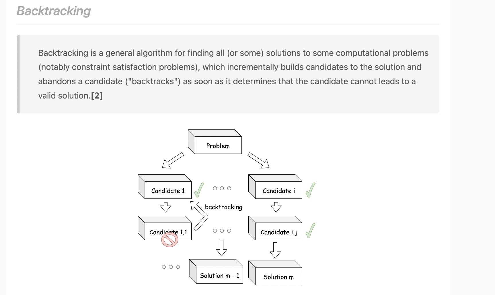

Backtrack
Last updated: Oct 6, 2025Table of Contents
- 0) Concept
- 0-0) start_idx — When & Why?
- ✅ Problems that NEED start_idx
- ❌ Problems that DO NOT use start_idx
- 🧭 Summary Table
- 0-1) i+1 or i as start_idx in recursion call ?
- 🧭 Core Difference Between i and i + 1 in Recursion
- 🔍 Problem Comparison by Recursion Pattern
- 🎯 Rules of Thumb
- 🔧 Quick Example
- Example 1: Coin Change II (518)
- Example 2: Combination Sum II (40)
- 🧠 Key Takeaway
- 🧠 Visual Guide: Recursion Index Patterns in LeetCode Problems
- 🔄 Unbounded Knapsack (Reuse Items)
- 🔒 0/1 Knapsack (Use Each Item Once)
- 📊 Quick Reference Table
- 🧭 Summary
- 0-1) Types
- 0-2) Pattern
- 0-3) Advanced Backtracking Patterns
- 1) General form
- 1-1) Basic OP
- 1-2) Trick
- 1-3) if true, return true right after recursive call
- 2) LC Example
- 2-1) Letter Combinations of a Phone Number
- 2-2) combination-sum
- 2-3) Word Search
- 2-4) Subsets
- 2-4’) Subsets II
- 2-5) Combinations
- 2-6) Permutations
- 2-7) Generate Parentheses
- 2-8) Palindrome Partitioning
- 2-9) Restore IP Addresses
- 2-9) Word Break
- 2-10) Word Break II
- 2-11) Course Schedule
Bracktrack
Brute force via
decision tree process
-
Backtrack (brute force) -> DP (dynamic programming)
-
optimization:
- remove duplicated sub cases
- have a cache (e.g. hash table) list finished cases (not re-compute them)
- “cut the sub-tree” via conditions such as
contains,start
-

-
pattern
1# pseudo code
2
3result = []
4
5def backtrack(路徑, 選擇清單):
6 if 滿足結束條件:
7 result.add(路徑)
8 return
9
10 for 選擇 in 選擇清單:
11 做選擇
12 backtrack(路徑, 選擇列表)
13 撤銷選擇
14
15
16- start_idx
17- early quit
0) Concept
-
3 things to consider :
-
Route: The choices have made -
Choice list: The choices we can select currently -
End condition: bottom of decision tree, meet this point then can’t do any other choise -
Algorithm
- dfs
- recursive
-
Data structure
- dict
- set
- array
0-0) start_idx — When & Why?
start_idx (or index, or similar) is used to control the search space — to avoid duplicates and maintain order in the generated result.
-> Use start_idx when:
- You’re generating combinations/subsets
- You want to avoid duplicates
- You want to preserve order of choices
✅ Problems that NEED start_idx
These typically involve combinations, subsets, or multi-use elements, where:
- Order doesn’t matter (e.g.,
[2,3]is same as[3,2]) - You want to avoid revisiting earlier choices
- You may reuse elements or pick each element once
🔹 Examples:
| Problem | Use of start_idx |
Why? |
|---|---|---|
Subsets (Leetcode 78) |
✅ Yes | To avoid duplicate subsets |
Combination Sum (Leetcode 39) |
✅ Yes | Reuse allowed, but in order |
Combination Sum II (Leetcode 40) |
✅ Yes | No reuse, skip duplicates |
Combinations (Leetcode 77) |
✅ Yes | Choose k out of n, in order |
Palindrome Partitioning |
✅ Yes | Explore substrings from start |
❌ Problems that DO NOT use start_idx
These are often permutation problems, where:
- Order does matter
- You want to try all possible orders
- You should revisit earlier choices (sometimes)
-> Don’t use start_idx when:
- You’re generating permutations
- You need all orderings
- Choices are not sequential (e.g., trying all positions)
🔹 Examples:
| Problem | Use of start_idx |
Why Not? |
|---|---|---|
Permutations (Leetcode 46) |
❌ No | All orderings are valid |
Permutations II (Leetcode 47) |
❌ No | Just skip duplicates smartly |
N-Queens |
❌ No | One row per recursion depth |
Word Break II |
❌ No | Choices depend on substring matches |
🧭 Summary Table
| Problem Type | Use start_idx? |
Example Problem |
|---|---|---|
| Subsets | ✅ Yes | Leetcode 78 |
| Combinations | ✅ Yes | Leetcode 77 |
| Combination Sum | ✅ Yes | Leetcode 39 |
| Permutations | ❌ No | Leetcode 46 |
| N-Queens | ❌ No | Leetcode 51 |
| Partitioning | ✅ Yes | Leetcode 131 |
0-1) i+1 or i as start_idx in recursion call ?
- LC 39, 78, 518
Let’s walk through it systematically by comparing well-known Leetcode problems where this pattern matters.
🧭 Core Difference Between i and i + 1 in Recursion
| Pattern | Meaning | Use Case |
|---|---|---|
i |
Reuse the same item again | Unbounded Knapsack (infinite items) |
i + 1 |
Use each item once only | 0/1 Knapsack, subsets |
🔍 Problem Comparison by Recursion Pattern
| Leetcode # | Problem | Recursion Index | Coin Usage | Explanation |
|---|---|---|---|---|
| 518 | Coin Change II | i |
Infinite | You can reuse coins unlimited times → use i |
| 377 | Combination Sum IV | i |
Infinite | Order matters → use all i, don’t restrict reuse |
| 39 | Combination Sum | i |
Infinite | Choose the same number again → i |
| 40 | Combination Sum II | i + 1 |
Once | Each number can be used once only |
| 46 | Permutations | no index (visited[]) |
Once | Full permutations → can’t reuse → use boolean visited array |
| 47 | Permutations II (with duplicates) | no index + dedup | Once | Same as LC 46 + dedup logic |
| 90 | Subsets II | i + 1 |
Once | Use each number once, skip duplicates |
| 78 | Subsets | i + 1 |
Once | Classic 0/1 inclusion/exclusion |
| 322 | Coin Change (min # of coins) | i |
Infinite | Optimization version of coin change |
| 494 | Target Sum | i + 1 |
Once per element | Only one + or - per number |
🎯 Rules of Thumb
| Situation | Use i |
Use i + 1 |
|---|---|---|
| Reuse allowed (infinite supply) | ✅ | ❌ |
| Use item only once | ❌ | ✅ |
| Generating combinations | ✅ | ✅ (depends) |
| Generating permutations | ❌ | ✅ (with visited[]) |
🔧 Quick Example
Example 1: Coin Change II (518)
1// Unlimited coin usage
2for (int i = start; i < coins.length; i++) {
3 backtrack(i, currentSum + coins[i]); // use coin[i] again
4}
Example 2: Combination Sum II (40)
1// Use each number at most once
2for (int i = start; i < candidates.length; i++) {
3 backtrack(i + 1, currentSum + candidates[i]); // can't reuse candidates[i]
4}
🧠 Key Takeaway
Use
iwhen repetition is allowed (unbounded knapsack style) Usei + 1when repetition is not allowed (0/1 knapsack, subset style)
🧠 Visual Guide: Recursion Index Patterns in LeetCode Problems
🔄 Unbounded Knapsack (Reuse Items)
-
Recursion Pattern:
i -
Use Case: Items can be used multiple times.
-
Examples:
- 518. Coin Change II: ([AlgoMonster][1])
- 377. Combination Sum IV
- 39. Combination Sum
- 322. Coin Change (Minimum Coins)
🔒 0/1 Knapsack (Use Each Item Once)
-
Recursion Pattern:
i + 1 -
Use Case: Each item can be used at most once.
-
Examples:
- 40. Combination Sum II: ([AlgoMonster][2])
- 78. Subsets
- 90. Subsets II
- 46. Permutations
- 47. Permutations II (with duplicates)
- 494. Target Sum
📊 Quick Reference Table
| Problem # | Problem Name | Recursion Index | Coin Usage | Notes |
|---|---|---|---|---|
| 518 | Coin Change II | i |
Infinite | Reuse coins; loop from i |
| 377 | Combination Sum IV | i |
Infinite | Order matters; loop from i |
| 39 | Combination Sum | i |
Infinite | Reuse elements; loop from i |
| 40 | Combination Sum II | i + 1 |
Once per element | Use each element once; loop from i + 1 |
| 78 | Subsets | i + 1 |
Once per element | Classic inclusion/exclusion; loop from i + 1 |
| 90 | Subsets II | i + 1 |
Once per element | Handle duplicates; loop from i + 1 |
| 46 | Permutations | visited[] |
Once per element | Full permutations; use visited array |
| 47 | Permutations II (with duplicates) | visited[] |
Once per element | Handle duplicates; use visited array |
| 494 | Target Sum | i + 1 |
Once per element | Only one + or - per number; loop from i + 1 |
🧭 Summary
-
Use
iwhen:- You can reuse items (unlimited supply).
- Order matters (e.g., combinations with repetition).
-
Use
i + 1when:- Each item can be used at most once.
- You’re generating combinations or subsets without repetition.
-
Use
visited[]when:- Generating permutations.
- Handling duplicates within the input.
0-1) Types
-
Conclusion:
-
NONEEDstart idx: 全排列 (Permutations)- Permutations (排列組合)
-
NEED
start idx: other backtrack problems- Subsets (子集)
- Combinations (組成)
- combination Sum (LC 39)
- partitioning
-
-
Problems types
-
Type 1) :
Subsets(子集)- Problems : LC 78, 90, 17
- 代碼隨想錄 - 0078.子集
- (for loop call help func) + start_idx + for loop + pop(-1)
- backtrack. find minumum case. transform the problem to
tree-problem. viastartremove already used numbers and return all cases - Need
!cur.contains(nums[i])-> to NOT add duplicated element
1# V1 2# ... 3cur = [] 4res = [] 5def help(start_idx, cur): 6 # .... 7 """ 8 NOTE !!! start_idx 9 10 we need start_idx here to AVOID re-select previous element 11 """ 12 for i in range(start_idx, len(wordDict)): 13 cur.append(wordDict[i]) 14 15 # NOTE !!! `start_idx + 1` 16 help(start_idx + 1, cur) 17 """ 18 NOTE !!! pop(-1) 19 """ 20 cur.pop(-1) 21# ...1// java 2public List<List<Integer>> subsets(int[] nums) { 3 // ... 4 this.getSubSet(start_idx, nums, cur, res); 5 //System.out.println("(after) res = " + res); 6 return res; 7} 8 9public void getSubSet(int start_idx, int[] nums, List<Integer> cur, List<List<Integer>> res){ 10 11 if (!res.contains(cur)){ 12 // NOTE !!! init new list via below 13 res.add(new ArrayList<>(cur)); 14 } 15 16 if (cur.size() > nums.length){ 17 return; 18 } 19 20 for (int i = start_idx; i < nums.length; i++){ 21 /** 22 * NOTE !!! 23 * 24 * for subset, 25 * we need "!cur.contains(nums[i])" 26 * -> to NOT add duplicated element 27 */ 28 if (!cur.contains(nums[i])){ 29 cur.add(nums[i]); 30 /** 31 * NOTE !!! 32 * 33 * at LC 78 subset, we need to use `i+1` idx 34 * in recursive call 35 * 36 * while at LC 39 Combination Sum, 37 * we use `i` directly 38 * 39 * 40 * e.g. next start_idx is ` i+1` 41 */ 42 this.getSubSet(i+1, nums, cur, res); 43 // undo 44 cur.remove(cur.size()-1); 45 } 46 } 47} -
Subsets I- LC 78
- start idx + backtrack
1// java 2// LC 78 3public void getSubSet(int start_idx, int[] nums, List<Integer> cur, List<List<Integer>> res){ 4 5 if (!res.contains(cur)){ 6 // NOTE !!! init new list via below 7 res.add(new ArrayList<>(cur)); 8 } 9 10 if (cur.size() > nums.length){ 11 return; 12 } 13 14 for (int i = start_idx; i < nums.length; i++){ 15 /** 16 * NOTE !!! 17 * 18 * for subset, 19 * we need "!cur.contains(nums[i])" 20 * -> to NOT add duplicated element 21 */ 22 if (!cur.contains(nums[i])){ 23 cur.add(nums[i]); 24 /** 25 * NOTE !!! 26 * 27 * at LC 78 subset, we need to use `i+1` idx 28 * in recursive call 29 * 30 * while at LC 39 Combination Sum, 31 * we use `i` directly 32 * 33 * 34 * e.g. next start_idx is ` i+1` 35 */ 36 this.getSubSet(i+1, nums, cur, res); 37 // undo 38 cur.remove(cur.size()-1); 39 } 40 } 41 } 42 -
Subsets II- LC 90
- start idx + backtrack + dedup (seen)
- dedup : can use dict counter or idx
1// java 2// LC 90 3private void backtrack(List<List<Integer>> list, List<Integer> tempList, int [] nums, int start){ 4 list.add(new ArrayList<>(tempList)); 5 for(int i = start; i < nums.length; i++){ 6 // skip duplicates 7 /** 8 * NOTE !!! 9 * 10 * below is the key shows how to simply skip duplicates 11 * (instead of using hashmap counter) 12 */ 13 if(i > start && nums[i] == nums[i-1]){ 14 continue; 15 } 16 tempList.add(nums[i]); 17 backtrack(list, tempList, nums, i + 1); 18 tempList.remove(tempList.size() - 1); 19 } 20} -
Type 2) :
Permutations (排列組合)(全排列)- Problems : LC 46, 47
- (for loop call help func) + contains + pop(-1)
- backtrack. via
containsremove already used numbers and return all cases NO NEEDto use start_idx
1# ... 2res = [] 3cur = [] 4def help(cur): 5 if len(cur) == len(s): 6 res.append(cur[:]) 7 return 8 if len(cur) > len(s): 9 return 10 for i in nums: 11 # NOTE this !!! 12 if i not in cur: 13 cur.append(i) 14 help(cur) 15 cur.pop(-1) 16# ... -
Permutations I (排列組合)- LC 46
1# python 2class Solution(object): 3 def permute(self, nums): 4 def help(cur): 5 if len(cur) == n_len: 6 if cur not in res: 7 res.append(list(cur)) 8 return 9 if len(cur) > n_len: 10 return 11 for i in nums: 12 #print ("i = " + str(i) + " cur = " + str(cur)) 13 if i not in cur: 14 cur.append(i) 15 help(cur) 16 """ 17 NOTE !!! : we UNDO the last op we just made (pop last element we put into array) 18 """ 19 cur.pop(-1) 20 # edge case 21 if not nums: 22 return [[]] 23 n_len = len(nums) 24 res = [] 25 help([]) 26 #print ("res = " + str(res)) 27 return res 28 ``` 29 -
Permutations II (排列組合)- LC 47
1# python 2class Solution(object): 3 def permuteUnique(self, nums): 4 def help(res, cur, cnt): 5 if len(cur) == len(nums): 6 if cur not in res: 7 res.append(cur[:]) 8 return 9 if len(cur) > len(nums): 10 return 11 for x in _cnt: 12 #print ("i = " + str(i) + " cur = " + str(cur)) 13 #if i not in cur: 14 if _cnt[x] > 0: 15 cur.append(x) 16 _cnt[x] -= 1 17 help(res, cur, _cnt) 18 """ 19 NOTE !!! : we UNDO the last op we just made (pop last element we put into array) 20 """ 21 cur.pop(-1) 22 _cnt[x] += 1 23 # edge case 24 if not nums: 25 return [[]] 26 _cnt = Counter(nums) 27 #print ("_cnt = " + str(_cnt)) 28 res = [] 29 cur = [] 30 help(res, cur, _cnt) 31 return res -
Type 3) :
Combinations (組成)- LC 77
- (for loop call help func) + start_idx + for loop + + check if len == k + pop(-1)
1# ... 2cur = [] 3res = [] 4def help(idx, cur): 5 if len(cur) == k: 6 res.append(cur) 7 return 8 for i in range(idx, n+1): 9 cur.append(i) 10 help(idx+1, cur) 11 cur.pop(-1) 12# ... -
Combination sum
-
Type 3) : Others
-
Parentheses (括弧)
- LC 20, LC 22
-
Combination Sum
- LC 39
1// java 2// https://leetcode.com/problems/subsets/solutions/27281/a-general-approach-to-backtracking-questions-in-java-subsets-permutations-combination-sum-palindrome-partitioning/ 3public List<List<Integer>> combinationSum(int[] nums, int target) { 4 List<List<Integer>> list = new ArrayList<>(); 5 Arrays.sort(nums); 6 backtrack(list, new ArrayList<>(), nums, target, 0); 7 return list; 8} 9 10private void backtrack(List<List<Integer>> list, List<Integer> tempList, int [] nums, int remain, int start){ 11 if(remain < 0) return; 12 else if(remain == 0) list.add(new ArrayList<>(tempList)); 13 else{ 14 for(int i = start; i < nums.length; i++){ 15 tempList.add(nums[i]); 16 /** NOTE !!! 17 * 18 * use i, since we need to use start from current (i) index in recursion call 19 * (reuse current index) 20 */ 21 backtrack(list, tempList, nums, remain - nums[i], i); 22 tempList.remove(tempList.size() - 1); 23 } 24 } 25} -
Combination Sum II
- LC 40
1// java 2// https://leetcode.com/problems/subsets/solutions/27281/a-general-approach-to-backtracking-questions-in-java-subsets-permutations-combination-sum-palindrome-partitioning/ 3 public List<List<Integer>> combinationSum2(int[] nums, int target) { 4 List<List<Integer>> list = new ArrayList<>(); 5 Arrays.sort(nums); 6 backtrack(list, new ArrayList<>(), nums, target, 0); 7 return list; 8 9} 10 11private void backtrack(List<List<Integer>> list, List<Integer> tempList, int [] nums, int remain, int start){ 12 if(remain < 0) return; 13 else if(remain == 0) list.add(new ArrayList<>(tempList)); 14 else{ 15 for(int i = start; i < nums.length; i++){ 16 if(i > start && nums[i] == nums[i-1]) continue; // skip duplicates 17 tempList.add(nums[i]); 18 backtrack(list, tempList, nums, remain - nums[i], i + 1); 19 tempList.remove(tempList.size() - 1); 20 } 21 } 22} -
Palindrome Partitioning
- LC 131
1// java 2// https://leetcode.com/problems/subsets/solutions/27281/a-general-approach-to-backtracking-questions-in-java-subsets-permutations-combination-sum-palindrome-partitioning/ 3public List<List<String>> partition(String s) { 4 List<List<String>> list = new ArrayList<>(); 5 backtrack(list, new ArrayList<>(), s, 0); 6 return list; 7} 8 9public void backtrack(List<List<String>> list, List<String> tempList, String s, int start){ 10 if(start == s.length()) 11 list.add(new ArrayList<>(tempList)); 12 else{ 13 for(int i = start; i < s.length(); i++){ 14 if(isPalindrome(s, start, i)){ 15 tempList.add(s.substring(start, i + 1)); 16 17 // NOTE !!! `i+1` 18 backtrack(list, tempList, s, i + 1); 19 tempList.remove(tempList.size() - 1); 20 } 21 } 22 } 23} 24 25public boolean isPalindrome(String s, int low, int high){ 26 while(low < high) 27 if(s.charAt(low++) != s.charAt(high--)) return false; 28 return true; 29}
-
0-2) Pattern
Pruning Techniques
Definition: Optimization methods to reduce the search space by eliminating branches that cannot lead to valid solutions.
Types of Pruning:
1. Constraint-based Pruning
- Early termination when constraints are violated
- Check validity before recursive calls
2. Bound-based Pruning
- Use upper/lower bounds to eliminate suboptimal paths
- Branch and bound technique
3. Symmetry Pruning
- Skip equivalent states to avoid duplicates
- Sort inputs to handle permutations
4. Memoization Pruning
- Cache results of subproblems
- Avoid recomputing same states
Common Pruning Patterns:
1def backtrack_with_pruning(path, choices, target):
2 # Early termination (constraint pruning)
3 if current_sum > target:
4 return # No need to continue
5
6 # Bound pruning
7 if current_sum + min_remaining > target:
8 return # Cannot reach target
9
10 # Base case
11 if len(path) == target_length:
12 if is_valid(path):
13 result.append(path[:])
14 return
15
16 # Symmetry pruning
17 for i in range(start_idx, len(choices)):
18 # Skip duplicates (symmetry pruning)
19 if i > start_idx and choices[i] == choices[i-1]:
20 continue
21
22 # Make choice
23 path.append(choices[i])
24
25 # Recursive call with pruning
26 backtrack_with_pruning(path, choices, target)
27
28 # Undo choice
29 path.pop()
Pruning Examples:
1. Sum-based Pruning (LC 39 Combination Sum):
1def combinationSum(candidates, target):
2 def backtrack(start, path, current_sum):
3 # Pruning: if current sum exceeds target
4 if current_sum > target:
5 return
6
7 if current_sum == target:
8 result.append(path[:])
9 return
10
11 for i in range(start, len(candidates)):
12 # Pruning: if adding current number exceeds target
13 if current_sum + candidates[i] > target:
14 break # Since array is sorted
15
16 path.append(candidates[i])
17 backtrack(i, path, current_sum + candidates[i])
18 path.pop()
19
20 candidates.sort() # Enable break pruning
21 result = []
22 backtrack(0, [], 0)
23 return result
2. Duplicate Pruning (LC 40 Combination Sum II):
1def combinationSum2(candidates, target):
2 def backtrack(start, path, current_sum):
3 if current_sum == target:
4 result.append(path[:])
5 return
6
7 for i in range(start, len(candidates)):
8 # Pruning: skip duplicates at same level
9 if i > start and candidates[i] == candidates[i-1]:
10 continue
11
12 # Pruning: early termination
13 if current_sum + candidates[i] > target:
14 break
15
16 path.append(candidates[i])
17 backtrack(i + 1, path, current_sum + candidates[i])
18 path.pop()
19
20 candidates.sort()
21 result = []
22 backtrack(0, [], 0)
23 return result
3. Bound Pruning (LC 698 Partition to K Equal Sum Subsets):
1def canPartitionKSubsets(nums, k):
2 total = sum(nums)
3 if total % k != 0:
4 return False
5
6 target = total // k
7 nums.sort(reverse=True) # Pruning: try larger numbers first
8
9 def backtrack(index, buckets):
10 if index == len(nums):
11 return all(bucket == target for bucket in buckets)
12
13 for i in range(k):
14 # Pruning: skip if adding exceeds target
15 if buckets[i] + nums[index] > target:
16 continue
17
18 # Pruning: avoid duplicate empty buckets
19 if i > 0 and buckets[i] == buckets[i-1]:
20 continue
21
22 buckets[i] += nums[index]
23 if backtrack(index + 1, buckets):
24 return True
25 buckets[i] -= nums[index]
26
27 return False
28
29 return backtrack(0, [0] * k)
Partitioning Patterns
Definition: Divide input into groups or segments based on certain criteria.
Common Partitioning Types:
1. Equal Sum Partitioning
- Divide array into groups with equal sums
- Examples: LC 416 (Partition Equal Subset Sum), LC 698 (K Equal Sum Subsets)
2. Palindromic Partitioning
- Split string into palindromic substrings
- Examples: LC 131 (Palindrome Partitioning), LC 132 (Palindrome Partitioning II)
3. Subset Partitioning
- Group elements based on constraints
- Examples: LC 90 (Subsets II), LC 47 (Permutations II)
Partitioning Templates:
1. String Partitioning Template:
1def partition_string(s, is_valid_partition):
2 def backtrack(start, current_partition):
3 if start == len(s):
4 result.append(current_partition[:])
5 return
6
7 for end in range(start + 1, len(s) + 1):
8 substring = s[start:end]
9 if is_valid_partition(substring):
10 current_partition.append(substring)
11 backtrack(end, current_partition)
12 current_partition.pop()
13
14 result = []
15 backtrack(0, [])
16 return result
2. Array Partitioning Template:
1def partition_array(nums, k, target_sum):
2 def backtrack(index, groups):
3 if index == len(nums):
4 return all(sum(group) == target_sum for group in groups)
5
6 for i in range(k):
7 if sum(groups[i]) + nums[index] <= target_sum:
8 groups[i].append(nums[index])
9 if backtrack(index + 1, groups):
10 return True
11 groups[i].pop()
12
13 # Pruning: if current group is empty, no need to try other empty groups
14 if not groups[i]:
15 break
16
17 return False
18
19 return backtrack(0, [[] for _ in range(k)])
Partitioning Examples:
1. Palindrome Partitioning (LC 131):
1def partition(s):
2 def is_palindrome(string):
3 return string == string[::-1]
4
5 def backtrack(start, path):
6 if start == len(s):
7 result.append(path[:])
8 return
9
10 for end in range(start + 1, len(s) + 1):
11 substring = s[start:end]
12 if is_palindrome(substring):
13 path.append(substring)
14 backtrack(end, path)
15 path.pop()
16
17 result = []
18 backtrack(0, [])
19 return result
2. Partition Equal Subset Sum (LC 416):
1def canPartition(nums):
2 total = sum(nums)
3 if total % 2 != 0:
4 return False
5
6 target = total // 2
7
8 def backtrack(index, current_sum):
9 if current_sum == target:
10 return True
11 if index >= len(nums) or current_sum > target:
12 return False
13
14 # Include current number
15 if backtrack(index + 1, current_sum + nums[index]):
16 return True
17
18 # Exclude current number
19 return backtrack(index + 1, current_sum)
20
21 return backtrack(0, 0)
3. Partition to K Equal Sum Subsets (LC 698):
1def canPartitionKSubsets(nums, k):
2 total = sum(nums)
3 if total % k != 0:
4 return False
5
6 target = total // k
7 nums.sort(reverse=True) # Start with larger numbers
8
9 def backtrack(index, buckets):
10 if index == len(nums):
11 return True
12
13 for i in range(k):
14 # Pruning techniques
15 if buckets[i] + nums[index] > target:
16 continue
17 if i > 0 and buckets[i] == buckets[i-1]:
18 continue
19
20 buckets[i] += nums[index]
21 if backtrack(index + 1, buckets):
22 return True
23 buckets[i] -= nums[index]
24
25 return False
26
27 return backtrack(0, [0] * k)
Advanced Partitioning Techniques:
1. Memoized Partitioning:
1def partition_with_memo(nums):
2 memo = {}
3
4 def backtrack(index, state_tuple):
5 if index == len(nums):
6 return check_valid_partition(state_tuple)
7
8 if state_tuple in memo:
9 return memo[state_tuple]
10
11 result = False
12 for choice in get_choices(index, state_tuple):
13 new_state = update_state(state_tuple, choice)
14 if backtrack(index + 1, new_state):
15 result = True
16 break
17
18 memo[state_tuple] = result
19 return result
20
21 return backtrack(0, initial_state)
2. Optimized Partitioning with Early Termination:
1def optimized_partition(nums, k):
2 def backtrack(index, groups, remaining_sum):
3 if index == len(nums):
4 return remaining_sum == 0
5
6 # Pruning: if remaining sum is too small
7 if remaining_sum < 0:
8 return False
9
10 for i in range(len(groups)):
11 groups[i].append(nums[index])
12 if backtrack(index + 1, groups, remaining_sum - nums[index]):
13 return True
14 groups[i].pop()
15
16 # Important pruning: don't try other empty groups
17 if len(groups[i]) == 0:
18 break
19
20 return False
21
22 return backtrack(0, [[] for _ in range(k)], sum(nums))
Pruning and Partitioning Comparison:
| Technique | Purpose | When to Use | Complexity Impact |
|---|---|---|---|
| Constraint Pruning | Early termination | Invalid states | Reduces branches significantly |
| Bound Pruning | Eliminate suboptimal paths | Optimization problems | O(2^n) → O(n!) potential |
| Symmetry Pruning | Avoid duplicates | Permutation problems | Eliminates factorial duplicates |
| Equal Sum Partition | Divide into equal groups | Subset sum problems | Exponential to polynomial |
| String Partition | Split by criteria | String segmentation | O(2^n) worst case |
0-3) Advanced Backtracking Patterns
1# python pseudo code 1
2# https://leetcode.com/explore/learn/card/recursion-ii/472/backtracking/2793/
3def backtrack(candidate):
4 if find_solution(candidate):
5 output(candidate)
6 return
7
8 # iterate all possible candidates.
9 for next_candidate in list_of_candidates:
10 if is_valid(next_candidate):
11 # try this partial candidate solution
12 place(next_candidate)
13 # given the candidate, explore further.
14 backtrack(next_candidate)
15 # backtrack
16 remove(next_candidate)
1# python pseudo code 2
2for choice in choice_list:
3 # do choice
4 routes.add(choice)
5 backtrack(routes, choice_list)
6 # undo choice
7 routes.remove(choice)
1# python pseudo code 3
2result = []
3def backtrack(route, choice_list):
4 if end_condition:
5 result.add(route)
6 return
7
8 for choice in choice_list:
9 ### core of backtrack
10 do_choice ### this one is necessary
11 backtrack(route, choice_list)
12 undo_choice ### this one is necessary
1) General form
1-1) Basic OP
1-2) Trick
1-2-1) append to cache with idx
1# LC 131. Palindrome Partitioning
2
3# ...
4def help(s, res, path):
5 if not s:
6 res.append(path)
7 for i in range(1, len(s)):
8 if s[:i] == s[:i][::-1]:
9 """
10 NOTE below !!!
11 -> we call help recursively with s[i:] subset
12 -> we append [s[:i]] to tmp cache (path)
13 """
14 help(s[i:], res, path + [s[:i]])
15# ...
1-2-2) avoid add duplicated element in same level (same recursion call)
1// LC 40
2// java
3// ...
4
5/**
6* NOTE !!! skip a duplicate at the same recursive level.
7*
8* -> Key idea of the duplicate-skipping logic
9* • We do not skip all duplicates.
10* • We only skip a duplicate at the same recursive level.
11*/
12
13if (i > startIdx && candidates[i] == candidates[i - 1]) {
14 continue;
15}
16
17// ...
1// LC 90
2// java
3
4// ...
5for (int j = i; j < nums.length; j++) {
6 /**
7 * NOTE !!! below !!
8 *
9 * via below, we avoid add `duplicated` element
10 *
11 */
12 if (j > i && nums[j] == nums[j - 1]) {
13 continue;
14 }
15 // ...
16}
17// ...
1// java
2// LC 47
3// ...
4
5// Skip duplicates in the same recursion layer
6if (i > 0 && nums[i] == nums[i - 1] && !used[i - 1])
7 continue;
8
9// ...
1-2-3) NOT do undo on primary variable
1// java
2// LC 79
3
4// https://github.com/yennanliu/CS_basics/blob/master/leetcode_java/src/main/java/LeetCodeJava/BackTrack/WordSearch.java#L133
5
6
7// In Java, primitive types like int are passed by value. This means when you do:
8
9// dfsFind(board, word, x+1, y, visited, start_idx + 1)
10
11// 1) You're passing a copy of start_idx + 1 to the recursive function. So, inside the recursive call, start_idx is a new variable, and changes to it won't affect the start_idx in the calling function.
12
13
14// 2) We don't need start_idx -= 1; because start_idx is passed by value, not by reference. So modifying it in the recursive call doesn't affect the caller's start_idx. We're already handling the correct index in each recursive call by passing start_idx + 1.
15
Important Note: When Backtracking is NOT Needed
1// LC 1740
2// NOTE !!! we don't need a `backtrack` below,
3// since `int` is a `primitive dtype in java
4// -> Each recursive call gets its own copy of move.
5// if we use dtype such as Mutable shared state (e.g. List, Set)
6// we need a backtrack (undo)
7
8private int getPathLen(TreeNode root, int target, int dist) {
9 if (root == null) {
10 return -1; // not found
11 }
12 if (root.val == target) {
13 return dist;
14 }
15 int left = getPathLen(root.left, target, dist + 1);
16
17 if (left != -1) {
18 return left;
19 }
20 int right = getPathLen(root.right, target, dist + 1);
21
22 // NOTE !!! we don't need a `backtrack` below,
23 // since `int` is a `primitive dtype in java
24 // -> Each recursive call gets its own copy of move.
25 // if we use dtype such as Mutable shared state (e.g. List, Set)
26 // we need a backtrack (undo)
27 return right;
28}
When to Use Backtracking (Undo):
| Data Type | Need Backtrack? | Reason |
|---|---|---|
Primitive types (int, char, boolean, etc.) |
❌ No | Passed by value; each recursive call gets its own copy |
Mutable objects (List, Set, Map, StringBuilder, etc.) |
✅ Yes | Passed by reference; modifications affect all recursive calls |
Immutable objects (String, Integer, etc.) |
❌ No | Modifications create new instances |
Example: When Backtracking IS Needed:
1// Mutable shared state - NEEDS backtracking
2void backtrack(List<Integer> path, int[] nums) {
3 if (path.size() == nums.length) {
4 result.add(new ArrayList<>(path));
5 return;
6 }
7 for (int num : nums) {
8 path.add(num); // modify shared state
9 backtrack(path, nums); // recursive call
10 path.remove(path.size()-1); // MUST undo - backtrack!
11 }
12}
Example: When Backtracking is NOT Needed:
1// Primitive types - NO backtracking needed
2int dfs(TreeNode root, int depth) {
3 if (root == null) return depth;
4
5 int left = dfs(root.left, depth + 1); // depth + 1 creates a NEW value
6 int right = dfs(root.right, depth + 1); // depth is unchanged for right call
7
8 // No need to do: depth -= 1;
9 // because depth was passed by value
10 return Math.max(left, right);
11}
1-3) if true, return true right after recursive call
1// java
2// LC 698
3
4// ...
5if (backtrack_(nums, j + 1, k, subsetSum + nums[j], used)){
6 return true;
7 }
8
9// ...
2) LC Example
2-1) Letter Combinations of a Phone Number
1// java
2// LC 17
3// V0
4// IDEA: BACKTRACK + start_idx (on digit)
5List<String> _res = new ArrayList<String>();
6public List<String> letterCombinations(String _digits) {
7
8 if (_digits.length() == 0){
9 return new ArrayList<>();
10 }
11
12 HashMap<java.lang.String, java.lang.String> letters = new HashMap<>();
13 letters.put("2", "abc");
14 letters.put("3", "def");
15 letters.put("4", "ghi");
16 letters.put("5", "jkl");
17 letters.put("6", "mno");
18 letters.put("7", "pqrs");
19 letters.put("8", "tuv");
20 letters.put("9", "wxyz");
21
22 _letter_builder(letters, 0, _digits, new StringBuilder());
23 return this._res;
24}
25
26private void _letter_builder(HashMap<String, String> map, int start_idx, String digits, StringBuilder builder){
27
28 /**
29 * NOTE !!!
30 *
31 * if builder (StringBuilder) length equals digits length,
32 * -> means we first one of the `all digit visit`
33 * -> we should add this cur to our result
34 */
35 if (builder.length() == digits.length()){
36 this._res.add(builder.toString()); // NOTE this
37 return;
38 }
39
40 /**
41 * NOTE !!!
42 *
43 *
44 * 1) the `start_idx` is for `digits` .
45 * e.g.
46 *
47 * -> if digits = "23",
48 * the start_idx is 0,
49 * and could become 1, ...
50 *
51 *
52 * 2) via `start_idx` we can focus on specific digit (e.g. "2" only, from "23")
53 * then we can loop over its `alphabet` in recursive call
54 * e.g. "abc" for "2"
55 *
56 * letters.put("2", "abc");
57 *
58 */
59 String _digit = String.valueOf(digits.toCharArray()[start_idx]); // NOTE this
60 String _alphabets = map.get(_digit);
61
62 // backtrack
63 /**
64 * NOTE !!!
65 *
66 * we loop over `_alphabets` (digit with idx),
67 * (instead of digit)
68 *
69 * -> so we can build our cur string accordingly
70 *
71 */
72 for (char a : _alphabets.toCharArray()){
73 builder.append(a);
74 _letter_builder(map, start_idx + 1, digits, builder);
75
76
77 // undo
78 // builder.deleteCharAt(0); // NOTE !!! in backtrack, we remove LAST element (idx = len - 1), instead of first element
79 builder.deleteCharAt(builder.toString().length() - 1);
80 // no need to `undo` start_idx, since it's primary type
81 // in java, it is copied as `new var` when pass the recursive call
82 // backtrack.html#1-2-3-not-do-undo-on-primary-variable
83 // start_idx -= 1; // this is WRONG!!!
84 }
85}
1# 017 Letter Combinations of a Phone Number
2# V0
3# IDEA : backtracking
4class Solution(object):
5 def letterCombinations(self, digits):
6 # help func
7 def help(idx, cur):
8 if len(cur) == len(digits):
9 tmp = "".join(cur[:])
10 res.append(tmp)
11 cur = []
12 return
13 if len(cur) > len(digits):
14 cur = []
15 return
16 for a in d[digits[idx]]:
17 cur.append(a)
18 help(idx+1, cur)
19 cur.pop(-1) # NOTE this !!! : we pop last element
20 # edge case
21 if not digits:
22 return []
23 res = []
24 cur = []
25 idx = 0
26 d = {'2': 'abc', '3': 'def', '4': 'ghi', '5': 'jkl', '6': 'mno', '7': 'pqrs', '8': 'tuv', '9': 'wxyz'}
27 help(idx, cur)
28 return res
29
30# V0'
31# IDEA : dfs + backtracking
32class Solution(object):
33 def letterCombinations(self, digits):
34
35 def dfs(idx, tmp):
36
37 """
38 NOTE : if idx == len(digits)
39 -> if tmp is not null, then we append tmp to our result (res)
40 -> and we out of the loop
41 """
42 if idx == len(digits):
43 if tmp != "":
44 res.append(tmp)
45 return
46
47 ### NOTE : we loop alphabets in d map per number rather than loop over number !!!
48 for alpha in d[digits[idx]]:
49 """
50 NOTE !!!!
51 idex+1 : for loop to next number
52 tmp+j : for collect cur update
53 """
54 print ("digits = " + str(digits), " tmp = " + str(tmp) + " alpha = " + str(alpha))
55 dfs(idx+1, tmp + alpha)
56
57 d = {'2' : "abc", '3' : "def", '4' : "ghi", '5' : "jkl", '6' : "mno", '7' : "pqrs", '8' : "tuv", '9' : "wxyz"}
58 res = []
59 dfs(0,"")
60 return
61
62# V1
63# idea : for loop
64class Solution(object):
65 def letterCombinations(self, digits):
66 """
67 :type digits: str
68 :rtype: List[str]
69 """
70 if digits == "": return []
71 d = {'2' : "abc", '3' : "def", '4' : "ghi", '5' : "jkl", '6' : "mno", '7' : "pqrs", '8' : "tuv", '9' : "wxyz"}
72 res = ['']
73 for e in digits:
74 res = [w + c for c in d[e] for w in res]
75 return res
2-2) combination-sum
1# LC 039, LC 040 combination-sum
2# V0
3# IDEA : DFS + BACKTRACK
4class Solution(object):
5 def combinationSum(self, candidates, target):
6
7 def dfs(tmp):
8 if sum(tmp) == target:
9 tmp.sort()
10 if tmp not in res:
11 res.append(tmp)
12 return
13 if sum(tmp) > target:
14 return
15 for c in candidates:
16 dfs(tmp + [c])
17
18 res = []
19 tmp = []
20 dfs(tmp)
21 return res
2-3) Word Search
1# LC 079 Word Search
2
3# V0
4# IDEA : DFS + backtracking
5class Solution(object):
6
7 def exist(self, board, word):
8 ### NOTE : construct the visited matrix
9 visited = [[False for j in range(len(board[0]))] for i in range(len(board))]
10
11 ### NOTE : we visit every element in board and trigger the dfs
12 for i in range(len(board)):
13 for j in range(len(board[0])):
14 if self.dfs(board, word, 0, i, j, visited):
15 return True
16
17 return False
18
19 def dfs(self, board, word, cur, i, j, visited):
20 # if "not false" till cur == len(word), means we already found the wprd in board
21 if cur == len(word):
22 return True
23
24 ### NOTE this condition
25 # 1) if idx out of range
26 # 2) if already visited
27 # 3) if board[i][j] != word[cur] -> not possible to be as same as word
28 if i < 0 or i >= len(board) or j < 0 or j >= len(board[0]) or visited[i][j] or board[i][j] != word[cur]:
29 return False
30
31 # mark as visited
32 visited[i][j] = True
33 ### NOTE THIS TRICK (run the existRecu on 4 directions on the same time)
34 result = self.dfs(board, word, cur + 1, i + 1, j, visited) or\
35 self.dfs(board, word, cur + 1, i - 1, j, visited) or\
36 self.dfs(board, word, cur + 1, i, j + 1, visited) or\
37 self.dfs(board, word, cur + 1, i, j - 1, visited)
38 # mark as non-visited
39 visited[i][j] = False
40
41 return result
1// java
2// LC 079
3// V0'
4// IDEA : DFS + BACKTRACK (modified by GPT)
5public boolean exist_0(char[][] board, String word) {
6 if (board == null || board.length == 0) {
7 return false;
8 }
9
10 int l = board.length;
11 int w = board[0].length;
12
13 boolean[][] visited = new boolean[l][w];
14
15 for (int i = 0; i < l; i++) {
16 for (int j = 0; j < w; j++) {
17 if (dfs_(board, i, j, 0, word, visited)) {
18 return true;
19 }
20 }
21 }
22
23 return false;
24}
25
26private boolean dfs_(char[][] board, int y, int x, int idx, String word, boolean[][] visited) {
27
28 if (idx == word.length()) {
29 return true;
30 }
31
32 int l = board.length;
33 int w = board[0].length;
34
35 if (y < 0 || y >= l || x < 0 || x >= w || visited[y][x] || board[y][x] != word.charAt(idx)) {
36 return false;
37 }
38
39 /** NOTE !!! we update visited on x, y here */
40 visited[y][x] = true;
41
42 int[][] dirs = {{0, 1}, {0, -1}, {1, 0}, {-1, 0}};
43 /**
44 * NOTE !!!
45 *
46 * instead of below structure:
47 *
48 * boolean didFindNextCharacter =
49 * dfs2(row + 1, col, word, lvl + 1, visited, board) ||
50 * dfs2(row - 1, col, word, lvl + 1, visited, board) ||
51 * dfs2(row, col + 1, word, lvl + 1, visited, board) ||
52 * dfs2(row, col - 1, word, lvl + 1, visited, board);
53 *
54 * we can use below logic as well:
55 *
56 * for (int[] dir : dirs) {
57 * if (dfs_(board, y + dir[0], x + dir[1], idx + 1, word, visited)) {
58 * return true;
59 * }
60 * }
61 *
62 */
63 for (int[] dir : dirs) {
64 if (dfs_(board, y + dir[0], x + dir[1], idx + 1, word, visited)) {
65 return true;
66 }
67 }
68
69 /** NOTE !!! we undo (backtrack) updated x, y here */
70 visited[y][x] = false;
71
72 return false;
73}
2-4) Subsets
1# LC 078 Subsets
2# V0
3# IDEA : Backtracking
4class Solution:
5 def subsets(self, nums):
6 def backtrack(first = 0, curr = []):
7 # if the combination is done
8 if len(curr) == k:
9 output.append(curr[:])
10 return
11 for i in range(first, n):
12 # add nums[i] into the current combination
13 curr.append(nums[i])
14 # use next integers to complete the combination
15 backtrack(i + 1, curr)
16 # backtrack
17 curr.pop()
18
19 output = []
20 n = len(nums)
21 for k in range(n + 1):
22 backtrack()
23 return output
24
25# V0'
26# brack tracking
27class Solution(object):
28 def subsets(self, nums):
29 def help(start, tmp, res):
30 tmp.sort()
31 if tmp not in res:
32 res.append(tmp)
33 for i in range(start, len(nums)):
34 if nums[i] not in tmp:
35 help(start+1, tmp + [nums[i]], res)
36 res = []
37 start = 0
38 tmp = []
39 if len(nums) == 1:
40 res = [[]]
41 res.append(nums)
42 return res
43 help(start, tmp, res)
44 return res
45
46# V0''
47# IDEA : DFS
48class Solution(object):
49 def subsets(self, nums):
50 def dfs(layer, start, tmp):
51 if tmp not in res:
52 res.append(tmp)
53 if layer == len(nums):
54 return
55 ### NOTE : we have if condition first, then for loop
56 for i in range(start, len(nums)):
57 ### NOTE below can make loop start `start idx` updated each time
58 dfs(layer+1, i+1, tmp + [nums[i]])
59 nums.sort()
60 res = []
61 dfs(0, 0, [])
62 return res
1// java
2// LC 78
3// V0'
4// IDEA : Backtracking
5// https://leetcode.com/problems/subsets/editorial/
6 List<List<Integer>> output = new ArrayList();
7 int n, k;
8
9 public void backtrack(int first, ArrayList<Integer> curr, int[] nums) {
10 // if the combination is done
11 if (curr.size() == k) {
12 output.add(new ArrayList(curr));
13 return;
14 }
15 /** NOTE HERE !!!
16 *
17 * ++i : i+1 first, then do op
18 * i++ : do op first, then i+1
19 *
20 * -> i++ or ++i is both OK here
21 */
22 for (int i = first; i < n; i++) {
23 // add i into the current combination
24 curr.add(nums[i]);
25 // use next integers to complete the combination
26 backtrack(i + 1, curr, nums);
27 // backtrack
28 curr.remove(curr.size() - 1);
29 }
30 }
31
32 public List<List<Integer>> subsets(int[] nums) {
33 n = nums.length;
34 /** NOTE HERE !!!
35 *
36 * ++k : k+1 first, then do op
37 * k++ : do op first, then k+1
38 *
39 * -> k++ or ++k is both OK here
40 */
41 for (k = 0; k < n + 1; k++) {
42 backtrack(0, new ArrayList<Integer>(), nums);
43 }
44 return output;
45 }
46
47
48
49// V1
50// IDEA : BACKTRACK
51// https://www.youtube.com/watch?v=REOH22Xwdkk&t=4s
52// https://github.com/neetcode-gh/leetcode/blob/main/java/0078-subsets.java
53 public List<List<Integer>> subsets_1_2(int[] nums) {
54 List<List<Integer>> ans = new ArrayList<>();
55 List<Integer> list = new ArrayList<>();
56 helper(ans, 0, nums, list);
57 return ans;
58 }
59
60 public void helper(
61 List<List<Integer>> ans,
62 int start,
63 int[] nums,
64 List<Integer> list
65 ) {
66 if (start >= nums.length) {
67 ans.add(new ArrayList<>(list));
68 } else {
69
70 // decision tree : add the element and start the recursive call
71 list.add(nums[start]);
72 helper(ans, start + 1, nums, list);
73
74 // decision tree : remove the element and do the backtracking call.
75 list.remove(list.size() - 1);
76 helper(ans, start + 1, nums, list);
77 }
78 }
1// c++
2// backtrack
3// (algorithm book (labu) p.303)
4
5// save all subset
6vector<vector<int>> res;
7
8/* main func */
9vector<vector<int>> subsets(vector<int> & nums){
10 // record visited routes
11 vector<int> tracks;
12 backtrack(nums, 0, track);
13 return res;
14}
15
16/* use backtrack pattern */
17void backtrack(vector<int> & nums, int start, vector<int> & track){
18 // pre-order tranverse
19 res.push_back(track);
20 // start from `start`, avoid duplivated subset
21 for (int i = start; i < nums.size(); i++){
22 // make choice
23 track.push_back(nums[i]);
24 // iteration backtrack
25 backtrack(nums, i+1, track);
26 // undo choice
27 track.pop_back();
28 }
29}
2-4’) Subsets II
1# LC 90 Subsets II
2# V0
3# IDEA : BACKTRACKING + LC 078 Subsets
4from collections import Counter
5class Solution(object):
6 def subsetsWithDup(self, nums):
7 def help(start, tmp, _cnt):
8 tmp.sort()
9 if tmp not in res:
10 res.append(tmp)
11 if start >= len(nums):
12 return
13 for i in range(start, len(nums)):
14 if _cnt[nums[i]] > 0:
15 _cnt[nums[i]] -= 1
16 help(start+1, tmp + [nums[i]], _cnt)
17 """
18 NOTE : here we "undo" the "_cnt[nums[i]] -= 1" op,
19 -> so next recursive can still have the "capacity" of such element
20 """
21 _cnt[nums[i]] += 1
22
23 # edge case
24 if not nums:
25 return []
26
27 # edge case
28 if len(nums) == 1:
29 res = [[]]
30 res.append([nums[0]])
31 return res
32
33 res = [[]]
34 _cnt = Counter(nums)
35 help(0, [], _cnt)
36 print ("res = " + str(res))
37 return res
38
39# V0
40# IDEA : BRUTE FORCE
41class Solution:
42 def subsetsWithDup(self, nums):
43 # small trick (init with a null array)
44 ans=[[]]
45 for i in nums:
46 for l in list(ans):
47 # sorted here, since we want to the "non-duplicated" power set
48 temp=sorted(l+[i])
49 # avoid duplicated
50 if temp not in ans:
51 ans.append(temp)
52 return ans
53
2-5) Combinations
1# LC 77. Combinations
2# V0
3# BACKTRACK
4class Solution(object):
5 def combine(self, n, k):
6 def dfs(current, start):
7 if(len(current) == k):
8 """
9 Both of below approach are OK
10
11 list(current) : transform current reference to list
12 current[:] : shallow copy
13 """
14 result.append(list(current))
15 return
16
17 for i in range(start, n + 1):
18 current.append(i)
19 dfs(current, i + 1)
20 current.pop()
21
22 result = []
23 dfs([], 1)
24 return result
25
26# V0'
27# IDEA : BACKTRACK
28class Solution:
29 def combine(self, n, k):
30 res=[]
31 def go(i,ma,ans):
32 if ma==k:
33 res.append(list(ans))
34 return
35 if i>n:
36 return
37 ans.append(i)
38 go(i+1,ma+1,ans)
39 ans.pop()
40 go(i+1,ma,ans)
41 go(1,0,[])
42 return res
1// c++
2// backtrack
3// (algorithm book (labu) p.305)
4
5// record all combinations
6vector<vector<int>> res;
7
8/* main func */
9vector<vector<int>> combine(int n, int k){
10 if (k <= 0 || n <= 0) return res;
11 vector<int> track;
12 backtrack(n, k, 1, track);
13 return res;
14}
15
16/* use backtrack pattern */
17void backtrack(int n, int k, int start, vector<int> & track){
18 // not update res till visit leaf node
19 if (k == track.size()){
20 res.push_back(track);
21 return;
22 }
23
24 // increase from i
25 for (int i = start; i <= n; i ++){
26 // do choice
27 track.push_back(i);
28 // backtrack
29 backtrack(n, k, i+1, track);
30 // undo choice
31 track.pop_back();
32 }
33}
2-6) Permutations
1# LC 46. Permutations
2# V0
3# IDEA : BACKTRACK,
4# similar idea as LC 77 -> difference : contains VS start
5class Solution(object):
6 def permute(self, nums):
7 def help(cur):
8 if len(cur) == n_len:
9 if cur not in res:
10 res.append(list(cur))
11 return
12 if len(cur) > n_len:
13 return
14 for i in nums:
15 #print ("i = " + str(i) + " cur = " + str(cur))
16 if i not in cur:
17 cur.append(i)
18 help(cur)
19 cur.pop(-1)
20 # edge case
21 if not nums:
22 return [[]]
23 n_len = len(nums)
24 res = []
25 help([])
26 #print ("res = " + str(res))
27 return res
28
29# V0
30class Solution(object):
31 def permute(self, nums):
32 visited = [0] * len(nums)
33 res = []
34 path = []
35 self.dfs(path)
36 return res
37
38 def dfs(self, path):
39 if len(path) == len(nums):
40 res.append(path)
41 else:
42 for i in range(len(nums)):
43 if not visited[i]:
44 visited[i] = 1
45 dfs(path + [nums[i]])
46 visited[i] = 0 ### to check if "visited[i] = 0" is necessary
1// LC 46. Permutations
2 List<List<Integer>> ans = new ArrayList<>();
3
4 // V0
5 // IDEA : BACKTRACK
6 public List<List<Integer>> permute(int[] nums) {
7
8 if (nums.length == 1){
9 List<List<Integer>> _ans = new ArrayList<>();
10 List<Integer> cur = new ArrayList<>();
11 cur.add(nums[0]);
12 _ans.add(cur);
13 return _ans;
14 }
15
16 List<Integer> cur = new ArrayList<>();
17 /** NOTE !!! we don't need to set idx param */
18 helper(nums, cur);
19
20 return this.ans;
21 }
22
23 private void helper(int[] nums, List<Integer> cur){
24
25 if (cur.size() > nums.length){
26 return;
27 }
28
29 if (!this.ans.contains(cur) && cur.size() == nums.length){
30
31 /** NOTE !!! we use below to add current ArrayList instance to ans */
32 this.ans.add(new ArrayList<>(cur));
33 }
34
35
36 for (int i = 0; i < nums.length; i++){
37 int val = nums[i];
38 // input nums is array with distinct integers
39 /** NOTE !!! ONLY do recursive, backtrack when meet distinct element */
40 if(!cur.contains(val)){
41 cur.add(val);
42 // recursive call
43 helper(nums, cur);
44 // undo last op
45 cur.remove(cur.size()-1); // NOTE !!! remove last element
46 }
47 }
48 }
2-7) Generate Parentheses
1# python
2# LC 022 Generate Parentheses
3# V0
4# IDEA : bracktrack + Valid Parentheses (LC 020)
5class Solution(object):
6 def generateParenthesis(self, n):
7 # help func for backtracking
8 def help(tmp, res, n):
9 if len(tmp) == n * 2 and check(tmp):
10 res.append(tmp)
11 return
12 if len(tmp) == n * 2:
13 return
14 for l in _list:
15 print ("l = " + str(l))
16 help(tmp + l, res, n)
17
18 """
19 LC 020 Valid Parentheses
20 """
21 def check(s):
22 lookup = {"(":")", "[":"]", "{":"}"}
23 q = []
24 for i in s:
25 if i not in lookup and len(q) == 0:
26 return False
27 elif i in lookup:
28 q.append(i)
29 else:
30 tmp = q.pop()
31 if lookup[tmp] != i:
32 return False
33 return True if len(q) == 0 else False
34
35 _list = ['(', ')']
36 if n == 1:
37 return ["()"]
38 res = []
39 help("", res, n)
40 return res
41
42# V0'
43# https://blog.csdn.net/fuxuemingzhu/article/details/79362373
44# IDEA: BACKTRACKING + DFS
45# NOTE : KEEP DFS WHEN MEAT 2 CONDTIONS:
46# 1) len(path) < n
47# 2) # of "(" > # of ")" (means it's still possible to form a "paratheses" as expected)
48class Solution(object):
49 def generateParenthesis(self, n):
50 res = []
51 self.dfs(res, n, n, '')
52 return res
53
54 def dfs(self, res, left, right, path):
55 if left == 0 and right == 0:
56 res.append(path)
57 return
58 if left > 0:
59 self.dfs(res, left - 1, right, path + '(')
60 if left < right:
61 self.dfs(res, left, right - 1, path + ')')
1// java
2// LC 022 Generate Parentheses
3// (algorithm book (labu) p.316)
4
5/* main func */
6vector<String> generateParentheses(int n){
7 if (n == 0) return {};
8 // record all legal collections
9 vector<string> res;
10 // backtrack the routes (in process)
11 string track;
12 // init : available left Parentheses and right Parentheses counts as n
13 backtrack(n, n, track, res);
14 return res;
15}
16
17/* remain left Parentheses count : left ;.. remain right Parentheses : right */
18void backtrack(int left, int right, string& track, vector<string> & res){
19 // if count < 0 : illegal
20 if (left < 0 || right < 0) return;
21 // if remain left Parentheses count > right Parentheses count : illegal
22 if (right < left) return;
23 // if all Parentheses are used : legal, we got one OK solution
24 if (left == 0 && right == 0){
25 res.push_back(track);
26 return;
27 }
28
29 // add one more left Parentheses
30 track.push_back('(') // do choice
31 backtrack(left - 1, right, track, res);
32 track.push_back(); // undo choice
33
34 // add one more right Parentheses
35 track.push_back(')') // do choice
36 backtrack(left, right - 1, track, res);
37 track.push_back(); // undo choice
38}
1// java
2// V2
3// IDEA : Backtracking, Keep Candidate Valid
4// https://leetcode.com/problems/generate-parentheses/editorial/
5public List<String> generateParenthesis_3(int n) {
6 List<String> answer = new ArrayList<>();
7 backtracking(answer, new StringBuilder(), 0, 0, n);
8
9 return answer;
10}
11
12private void backtracking(List<String> answer, StringBuilder curString, int leftCount, int rightCount, int n) {
13 if (curString.length() == 2 * n) {
14 answer.add(curString.toString());
15 return;
16 }
17 if (leftCount < n) {
18 curString.append("(");
19 backtracking(answer, curString, leftCount + 1, rightCount, n);
20 curString.deleteCharAt(curString.length() - 1);
21 }
22 if (leftCount > rightCount) {
23 curString.append(")");
24 backtracking(answer, curString, leftCount, rightCount + 1, n);
25 curString.deleteCharAt(curString.length() - 1);
26 }
27}
2-8) Palindrome Partitioning
1// java
2// LC 131
3// V0-1
4// IDEA: BACKTRACK + start_idx (fixed by gpt)
5List<List<String>> partitionRes = new ArrayList<>();
6
7public List<List<String>> partition_0_1(String s) {
8 if (s == null || s.isEmpty()) {
9 return new ArrayList<>();
10 }
11
12 backtrack(s, 0, new ArrayList<>());
13 return partitionRes;
14}
15
16private void backtrack(String s, int start, List<String> currentList) {
17/**
18 *
19 * • This is the base case of the recursion.
20 *
21 * • It means: “If we’ve reached the end of the string,
22 * then the current list of substrings (currentList)
23 * forms a valid full partition of s into palindromes.”
24 *
25 * • -> So we add a copy of currentList into
26 * the final result list partitionRes.
27 */
28/**
29 * - Why start == s.length()?
30 *
31 * • Because start is the index from which
32 * we’re currently trying to partition.
33 *
34 * • If start == s.length(), it means we’ve
35 * used up all characters in s, and currentList is now a full,
36 * valid partition.
37 */
38if (start == s.length()) {
39 partitionRes.add(new ArrayList<>(currentList));
40 return;
41 }
42
43/**
44* NOTE !!!
45*
46* 1) we loop from `start + 1` to `s.length()`
47* 2) get sub string via s.substring(a, b)
48* 3) check if current sub string is Palindrome
49* - if yes,
50* - add sub string to current cache
51* - recursive call backtrack
52* - undo cache add
53*/
54for (int end = start + 1; end <= s.length(); end++) {
55 String sub = s.substring(start, end);
56 if (isPalindrome(sub)) {
57 currentList.add(sub);
58 backtrack(s, end, currentList);
59 currentList.remove(currentList.size() - 1); // undo
60 }
61 }
62
63}
64
65// helper func check if a string is `Palindrome`
66public boolean isPalindrome(String x) {
67 int l = 0;
68 int r = x.length() - 1;
69 while (r > l) {
70 if (x.charAt(l) != x.charAt(r)) {
71 return false;
72 }
73 r--;
74 l++;
75 }
76 return true;
77}
1# LC 131 Palindrome Partitioning
2# V0
3# IDEA : BACKTRCK, similar as LC 046 permutations
4class Solution(object):
5 def partition(self, s):
6 def help(s, res, path):
7 if not s:
8 res.append(path)
9 return
10 for i in range(1, len(s)+1):
11 if s[:i] == s[:i][::-1]:
12 help(s[i:], res, path + [s[:i]])
13 # edge case
14 if not s:
15 return
16 res = []
17 path = []
18 help(s, res, path)
19 return res
20
21# V0'
22# IDEA : BACKTRCK, similar as LC 046 permutations
23class Solution(object):
24 def partition(self, s):
25 res = []
26 self.helper(s, res, [])
27 return res
28
29 def helper(self, s, res, path):
30 if not s:
31 res.append(path)
32 return
33 # beware of the start and the end index
34 for i in range(1, len(s) + 1):
35 if self.isPalindrome(s[:i]):
36 """
37 ### backtrcking
38 if s[:i] is palindrome, then check if there is palindrome in s[i:] as well
39 e.g.
40 a a b b a
41 =>
42 if 'aa' (<-) is palindrome, then check a b b a (->)
43 """
44 self.helper(s[i:], res, path + [s[:i]])
45
46 def isPalindrome(self, x):
47 return x == x[::-1]
2-9) Restore IP Addresses
1# 093 Restore IP Addresses
2# V0
3# IDEA : DFS
4class Solution(object):
5 def restoreIpAddresses(self, s):
6 # if not valid input form (ip address length should < 12)
7 if len(s) > 12:
8 return []
9 res = []
10 self.dfs(s, [], res)
11 return res
12
13 def dfs(self, s, path, res):
14 # if not remaining elments (not s) and path is in "xxx.xxx.xxx.xxx" form
15 if not s and len(path) == 4:
16 res.append('.'.join(path))
17 return
18 for i in [1,2,3]:
19 # avoid "out of index" error
20 if i > len(s):
21 continue
22 number = int(s[:i])
23 # str(number) == s[:i] for checking if digit is not starting from "0"
24 # e.g. 030 is not accepted form, while 30 is OK
25 if str(number) == s[:i] and number <= 255:
26 self.dfs(s[i:], path + [s[:i]], res)
2-9) Word Break
1# LC 139 Word Break
2# V0
3# IDEA : BFS
4class Solution:
5 def wordBreak(self, s, wordDict):
6 if not s or not wordDict:
7 return
8 q = collections.deque()
9 q.append(0)
10 visited = [None]*len(s)
11 while q:
12 i = q.popleft()
13 if not visited[i]:
14 for j in range(i+1,len(s)+1):
15 if s[i:j] in wordDict:
16 if j == len(s):
17 return True
18 q.append(j)
19 visited[i]=True
2-10) Word Break II
1# LC 140 Word Break II
2# NOTE : there is also dfs, dp approaches
3# V0
4# IDEA : BACKTRCK, LC 078 Subsets
5class Solution(object):
6 def wordBreak(self, s, wordDict):
7 def help(cur):
8 """
9 NOTE this !!! :
10 -> shallow copy cur[:]
11 """
12 if "".join(cur[:]) == s:
13 res.append(" ".join(cur[:]))
14 return
15 if len("".join(cur[:])) > len(s):
16 return
17 for i in range(len(wordDict)):
18 cur.append(wordDict[i])
19 help(cur)
20 # NOTE this
21 cur.pop()
22
23 # edge case
24 if not wordDict:
25 return []
26 res = []
27 cur = []
28 cnt = 0
29 help(cur)
30 print ("res = " + str(res))
31 return res
32
33# V1
34# IDEA : RECURSION
35# https://leetcode.com/problems/word-break-ii/discuss/1426014/Python-interview-friendly-simple-recursion
36class Solution:
37 def wordBreak(self, s: str, wordDict: List[str]) -> List[str]:
38 def recur(s, path):
39 if not s:
40 out.append(' '.join(path))
41 return
42 for i in range(1,len(s)+1):
43 w,new_s = s[:i], s[i:]
44 if w in wordDict:
45 recur(new_s, path + [w])
46 wordDict, out = set(wordDict), []
47 recur(s,[])
48 return out
49
50# V1'
51# IDEA : BACKTRCK
52# https://leetcode.com/problems/word-break-ii/discuss/44404/Python-backtracking
53class Solution:
54 def wordBreak(self, s, dic):
55 if not dic:
56 return []
57 n = max(len(d) for d in dic)
58 stack, parents = [0], collections.defaultdict(set)
59 while stack:
60 parent = stack.pop()
61 for child in range(parent+1, parent+n+1):
62 if s[parent:child] in dic:
63 if child not in parents:
64 stack.append(child)
65 parents[child].add(parent)
66 stack, res = [[len(s)]], []
67 while stack:
68 r = stack.pop()
69 if r[0] == 0:
70 r = [s[i:j] for i, j in zip(r[:-1], r[1:])]
71 res.append(' '.join(r))
72 for parent in parents[r[0]]:
73 stack.append([parent]+r)
74 return res
2-11) Course Schedule
1// java
2// LC 207
3// V0
4// IDEA : DFS (fix by gpt)
5// NOTE !!! instead of maintain status (0,1,2), below video offers a simpler approach
6// -> e.g. use a set, recording the current visiting course, if ANY duplicated (already in set) course being met,
7// -> means "cyclic", so return false directly
8// https://www.youtube.com/watch?v=EgI5nU9etnU
9public boolean canFinish(int numCourses, int[][] prerequisites) {
10 // Initialize adjacency list for storing prerequisites
11 /**
12 * NOTE !!!
13 *
14 * init prerequisites map
15 * {course : [prerequisites_array]}
16 * below init map with null array as first step
17 */
18 Map<Integer, List<Integer>> preMap = new HashMap<>();
19 for (int i = 0; i < numCourses; i++) {
20 preMap.put(i, new ArrayList<>());
21 }
22
23 // Populate the adjacency list with prerequisites
24 /**
25 * NOTE !!!
26 *
27 * update prerequisites map
28 * {course : [prerequisites_array]}
29 * so we go through prerequisites,
30 * then append each course's prerequisites to preMap
31 */
32 for (int[] pair : prerequisites) {
33 int crs = pair[0];
34 int pre = pair[1];
35 preMap.get(crs).add(pre);
36 }
37
38 /** NOTE !!!
39 *
40 * init below set for checking if there is "cyclic" case
41 */
42 // Set for tracking courses during the current DFS path
43 Set<Integer> visiting = new HashSet<>();
44
45 // Recursive DFS function
46 for (int c = 0; c < numCourses; c++) {
47 if (!dfs(c, preMap, visiting)) {
48 return false;
49 }
50 }
51 return true;
52}
53
54private boolean dfs(int crs, Map<Integer, List<Integer>> preMap, Set<Integer> visiting) {
55 /** NOTE !!!
56 *
57 * if visiting contains current course,
58 * means there is a "cyclic",
59 * (e.g. : needs to take course a, then can take course b, and needs to take course b, then can take course a)
60 * so return false directly
61 */
62 if (visiting.contains(crs)) {
63 return false;
64 }
65 /**
66 * NOTE !!!
67 *
68 * if such course has NO preRequisite,
69 * return true directly
70 */
71 if (preMap.get(crs).isEmpty()) {
72 return true;
73 }
74
75 /**
76 * NOTE !!!
77 *
78 * add current course to set (Set<Integer> visiting)
79 */
80 visiting.add(crs);
81 for (int pre : preMap.get(crs)) {
82 if (!dfs(pre, preMap, visiting)) {
83 return false;
84 }
85 }
86 /**
87 * NOTE !!!
88 *
89 * remove current course from set,
90 * since already finish visiting
91 *
92 * e.g. undo changes
93 */
94 visiting.remove(crs);
95 preMap.get(crs).clear(); // Clear prerequisites as the course is confirmed to be processed
96 return true;
97}